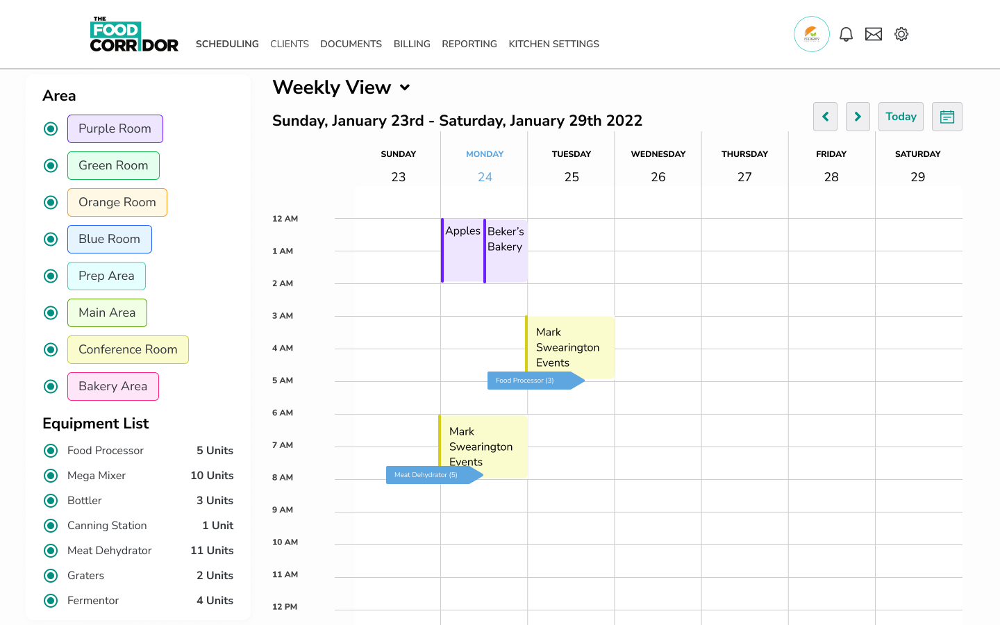

The Food Corridor
Continual updates to mobile and desktop webapps using client feedback and heuristic evalutation. Working 1:1 with Product Owner, CEO, and development team.
Final Prototype
Desktop
Mobile
Problems
The Food Corridor is a commissary kitchen rental space - like an airbnb for ghost kitchens.
Many of TFC's clients are on the go and the mobile experience is lacking. In order to provide an accessible user experience, a mobile-first design revamp is necessary.
Research
Coming on board, I went through interviews The Food Corridor had done with clients, as well as usability testing. The users constantly provided feedback, which allowed me to hone in on specific requirements.
While The Food Corridor exists in a niche space, this didn't prevent competitors from creeping in. We had to ensure that our product remained focused on client usability.
Personas
The Food Corridor's main personas are Food Businesses, who are using the app to rent kitchen space; and Kitchen Services, who are using the app to rent out their vacant kitchen space.
Kitchen Spaces can vary. They can be ghost kitchens, incubator kitchens, or commissary kitchens; all with different needs.
Initial
When I came onboard, TFC had an existing design library and product. This didn't stop me from auditing the current designs and recreating the design library in easy to code components in figma.
Usability Testing
We were able to consistently test any design updates we made with our loyal client network and make changed accordingly.
Final Product
Making small changes to The Food Corridor's design library and components went a long way in creating a seamless mobile-first user experience.
